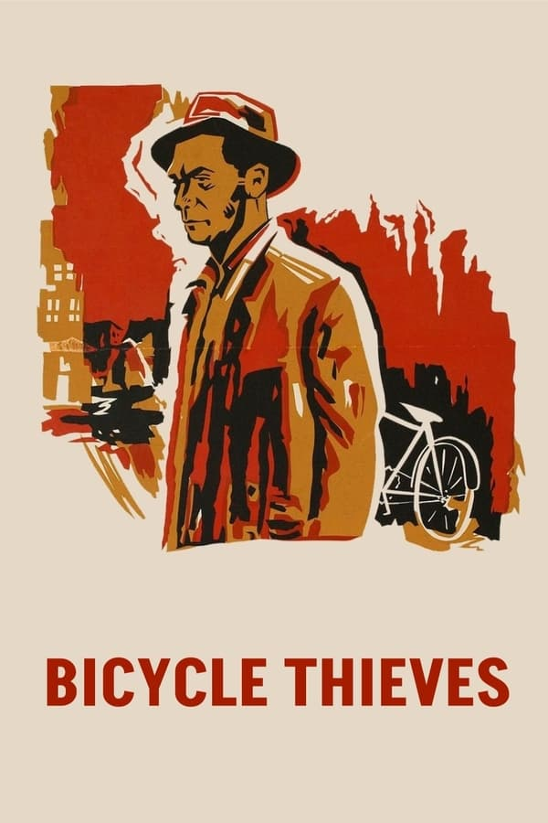
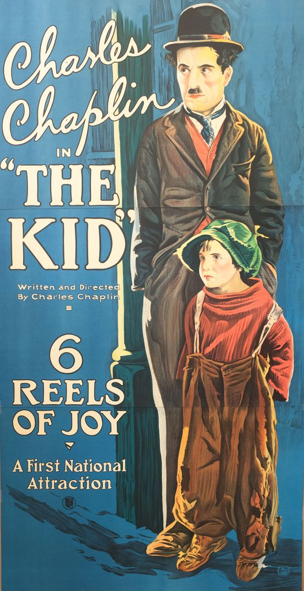
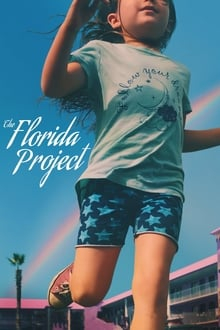
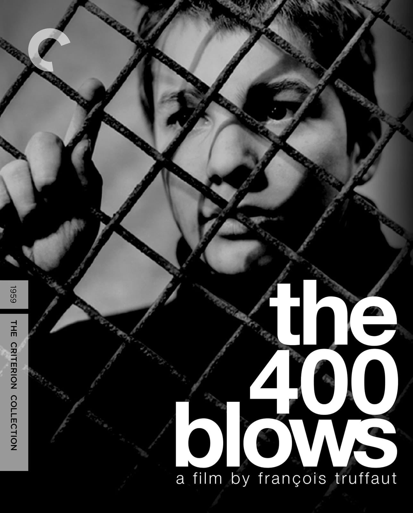
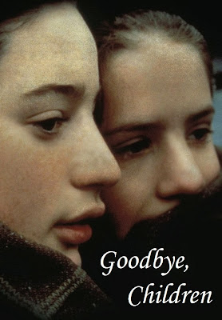
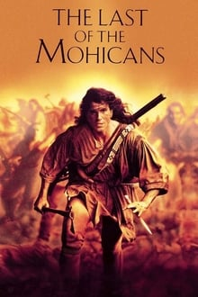
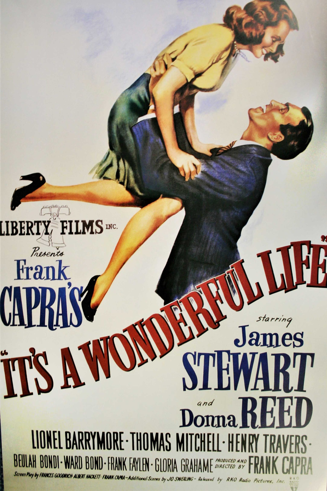

შემეცნების სასახლე - Palace Of Cognition

ველოსიპედის გამტაცებელნი (1948) - რეჟისორი ვიტორიო დე სიკა
„ველოსიპედის გამტაცებელნი“ - ნეორეალიზმის თვალსაჩინო ნიმუშია. ფილმი მოგვითხრობს ღარიბი იტალიელი მამაკაცის ამბავს, რომელიც მოპარულ ველოსიპედს ეძებს, მის გარეშე, იგი სამსახურს დაკარგავს და ოჯახის რჩენას ვერ შეძლებს. ნამუშევარში ომისშემდგომ იტალიაში დაბუდებული მძიმე სოციალური მდგომარეობაა ასახული.

პატარა (1921) - რეჟისორი ჩარლი ჩაპლინი
„პატარა“ ჩარლი ჩაპლინის ნამუშევარია. მარტოხელა მუშა, ღარიბულ სახლში შეიკედლებს უცხო ბავშვს, შემდეგ კი, იძულებულია რომ მას დაშორდეს. რთულია, რომ ხსენებულმა ნამუშევარმა მაყურებელი აღელვების გარეშე დატოვოს.
მე, დენიელ ბლეიკი (2016) - რეჟისორი ქენ ლოუჩი
„მე, დენეილ ბლეიკი“ - ბრიტანული სოციალური კინოა. გულის შეტევის გადატანის შემდგომ, 59 წლის დენიელ ბლეიკს უწევს ებრძოლოს სახელმწიფოს ბიუროკრატიულ მანქანას, სამუშაოსა და სოციალური დახმარების მიღების მიზნით.

პროექტი "ფლორიდა" (2017) - რეჟისორი შონ ბეიკერი
„პროექტი ფლორიდა" - ერთი ზაფხულს, ფლორიდის ღარიბულ მოტელში მცხოვრები ბავშვების შესახებ მოგვითხრობს. ფილმი ამერიკის ღარიბი მოსახლეობის ყოველდღიურობაში არსებულ ეკონომიკურ პრობლემებს აღგვიწერს.

400 დარტყმა (1959) - რეჟისორი ფრანსუა ტრიუფო
„400 დარტყმა“ ფრანგული ახალი ტალღის სულისჩამდგმელი ნამუშევარია. ფილმი ემოციურად მიტოვებული მოზარდის შესახებ მოგითხრობს, ბიჭს აკლია ყურადღება მშობლებისა და სკოლისაგან. ფილმი ნაწილობრივ ავტობიოგრაფიულია, რაც ნამუშევარში აღწერილ პრობლემატიკას მეტ სანდოობას ანიჭებს.

მშვიდობით ბავშვებო (1987) - რეჟისორი ლუი მალი
„მშვიდობით ბავშვებო“ - ფილმი მეორე მსოფლიო ომის დროს, ნაცისტების მიერ ოკუპირებულ საფრანგეთში ერთ-ერთი კათოლიკური სკოლის შესახებ მოგვითხრობს. სკოლის ხელმძღვანელობის მიერ შეფარებულია რამდენიმე ებრაელი ბავშვი, ნამუშევარი მორალური დილემების, თანაგრძნობის, ერთგულებისა და სხვა ადამიანური საკითხების გარშემო ტრიალებს.

უკანასკნელი მოჰიკანი (1998) - რეჟისორი მაიკლ მენი
„უკანასკნელი მოჰიკანი“ - ფილმი აღგვიწერს მეთვრამეტე საუკუნეში ამერიკის კოლონიზაციისათვის წარმოებულ ომსა და ინდიელების ჩართულობას ამ ბრძოლაში.

ეს მშვენიერი ცხოვრება (1946) - რეჟისორი ფრენკ კაპრა
„ეს მშვენიერი ცხოვრება“ - ამერიკული საშობაო ფილმი. პატარა ქალაქში, ბედფორდ ფოლსში მცხოვრები კაცი სადაზღვევო კომპანიის მფლობელია, იგი მოსიყვარულე ქმარი და მამაა, რომლის ცხოვრებაშიც ქალაქში არსებული მწვავე კლასობრივი პრობლემატიკა იჭრება.